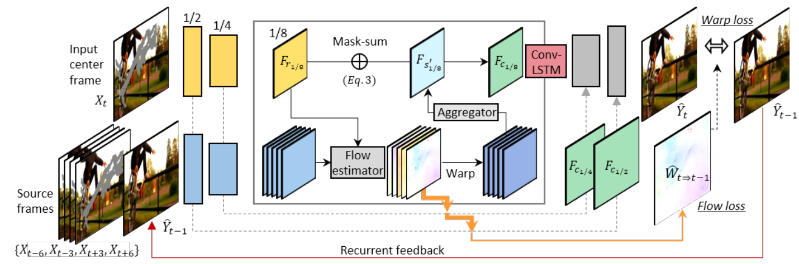

video to video
Video-to-Video Synthesis NIPS 2018
Abstract
我们研究视频到视频合成问题，其目标是学习从输入源视频(例如，语义分割掩码序列)到输出逼真视频的映射函数，该输出视频精确地描绘了源视频的内容。虽然图像到图像的翻译问题是一个流行的话题，但视频到视频合成问题在文献中很少被探索。在没有建模时间动态（temporal dynamics）的情况下，直接将现有的图像合成方法应用于输入视频往往会导致时间不连贯的低视觉质量的视频。
在本文中，我们提出了一种生成对抗学习框架下的视频到视频合成方法。通过精心设计的生成器和鉴别器，再加上时空对抗目标（spatio-temporal adversarial objective），我们在包括分割掩模（segmentation masks）、草图（sketches）和姿势（poses）在内的各种输入格式上实现了高分辨率、逼真性、时间一致性（temporally coherent）的视频结果。
在多个baseline上的实验表明，与强baseline相比，我们的方法具有优势。特别是，我们的模型能够合成长达30秒的2K分辨率街景视频，这大大提高了视频合成的最先进水平。最后，我们将我们的方法应用于未来的视频预测，优于几个竞争系统。代码、模型和更多结果可在我们的网站上获得。
Method
输入视频帧：，可以是分割图像，边缘图像，voxelgrid？
对应的gt帧：，
模拟得到的目标帧：
v2v的目标是从恢复出，该问题可以建模为二者条件分布相同：
用条件GAN求解，最小化两分布的JS散度求解，求解极大极小问题。
Sequential generator：
为了简化问题，我们提出一个马尔可夫假设，将条件分布分解为乘积形式：
也就是说，假设视频帧按顺序生成，第t帧的生成只取决于三个因素：源帧，过去L个源帧，还有过去L个生成帧。我们训练了一个前馈网络来模拟条件分布，令，通过递归的方式来获得最终的输出。小的L会导致训练不稳定，大的L会增加训练难度，几乎不改善质量，因此设L=2。
视频连续帧中有大量冗余信息，可以用帧间光流与当前帧warp得到下一帧 。除了一些遮挡区域，很大程度上是正确的，因此将F建模为：
其中是element-wise product operator（元素乘积），1是所有值为1的图像。第一部分是前一帧warp的像素，第二部分产生新的像素。公式中部分参数的定义：
- ：是到的光流，W是光流估计网络，我们用前L个输入帧与之前预测的帧来估计光流。
- ：为hallucinated image，由生成器
- H直接生成。
- ：是具有0到1之间连续值的遮挡掩码，M为掩码预测网络，我们的遮挡掩码是soft的，而不是binary的，以更好地处理“放大”场景。例如，当一个物体靠近我们的相机时，如果我们只扭曲之前的帧，那么随着时间的推移，物体会变得越来越模糊。为了增加对象的分辨率，我们需要合成新的纹理细节。通过使用soft蒙版，我们可以通过逐渐混合warp的像素和新合成的像素来添加细节。
然后就是用GAN嗯造。
flow loss可以介绍一下
光流损失包括两项，第一个是ground truth和估计光流的endpoint误差，第二个是warping损失，令为光流gt。
Deep Video Inpainting CVPR 2019
Abstract
视频修补（video inpainting）的目的是用视频中看似合理的内容来填补时空漏洞。尽管深度神经网络在图像修复方面取得了巨大的进展，但由于额外的时间维度，将这些方法扩展到视频领域具有挑战性。
在这项工作中，我们提出了一种新的深度网络架构，用于快速视频修补。我们的框架建立在一个基于图像的encoder-decoder模型之上，旨在从相邻帧中收集和提炼信息，并综合仍然未知的区域。同时，通过一个循环反馈（recurrent feedback）和一个临时记忆（temporal memory）模块，输出被强制在时间上保持一致。与最先进的图像修补算法相比，我们的方法生成的视频在语义上更正确，时间上更流畅。
与之前依赖于耗时优化的视频补全方法相比，我们的方法几乎实时运行，同时生成具有竞争力的视频结果。最后，将该框架应用到视频重定向任务中，获得了视觉效果良好的结果。
一帧一帧重构会有 flickering artifacts
在本文中，我们研究了前馈深度网络是否适用于视频修补任务。具体来说，我们试图训练一个具有两个核心功能的模型:
-
时间特征聚合（temporal feature aggregation）
-
时间一致性保持（temporal consistency preserving）。
对于时间特征聚合，我们将视频修补任务转换为一个连续的多帧到单帧修补问题。特别地，我们介绍了一种新颖的3D-2D前馈网络，它建立在基于2d(基于图像)的编码器-解码器模型之上。该网络旨在收集和细化邻居帧的潜在提示，并在空间和时间上合成语义一致的视频内容。
对于时间一致性，我们建议使用循环反馈和内存层(例如传统的LSTM[28])。此外，我们使用流动损失来学习先前合成框架的翘曲，并使用翘曲损失来加强结果的短期和长期一致性。最后，我们提出了一个单一的、统一的深度CNN模型，称为VINet。
Method
Problem Formulation：
源视频帧：，
gt视频帧：
修补后的估计帧：
修补的任务也就是类似于上篇文章的条件分布：
同样的做马尔科夫假设，将问题拆分为乘积的形式，
与上一篇文章不同的是，这里认为gt帧与前后的输入图像有关，同时与前一重构帧有关，同时，还与一循环记忆单元Mt有关。其中，，前后隔3帧取样。跟上文方法类似，用一个神经网络去拟合，也就是，其余都与上一篇文章类似。
temporal feature aggregation：一帧的信息受到前后几帧的影响。
Network Design：
Source and reference encoders： encoder是由source流和reference流构成的multiple-tower，source流包括前后几帧带mask的，reference流包括带mask的当前帧，沿着channel维度concat帧和mask，下图中source frames的5个为一个，然后xt为一个reference，
Feature flow learning： 在直接合并两流之前，建议直接对齐特征点，这种策略可以帮助模型从相邻帧获取特征，我们插入flow子网络实现，来估计source和ref之间的flow（在四个不同空间尺度），采用PWCnet由粗到细的结构，仅在最精细的尺度上给出精确的flow supervision，且只在连续两帧之间给出。使用FLowNet2在Yt和Yt-1中提取fake gt的光流。
Learnable Feature Composition： 给定5个source流的feature map，沿时间concat ，经过光流操作得到聚合特征图，时间维度为1，为了动态选择与ref特征互补的特征，对each 4 scales，用一个mask子网络来合并aggregated聚合特征图和ref特征图，mask子网络由三个卷积层构成，以两特征图的绝对差值作为输入，生成单通道复合mask m。有了这个mask，就可以将warp特征和ref特征结合起来，也就是：
其中代表element-wise product operator。四分之一，二分之一和八分之一类似，在最精细的尺度上，估计得到的光流用于将前一估计帧的输出warp为当前的raw输出，然后将该输出与m1混合，得到最后的输出：
在八分之一后输入convlstm
